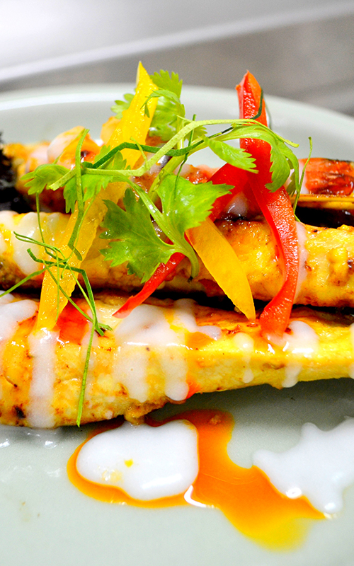
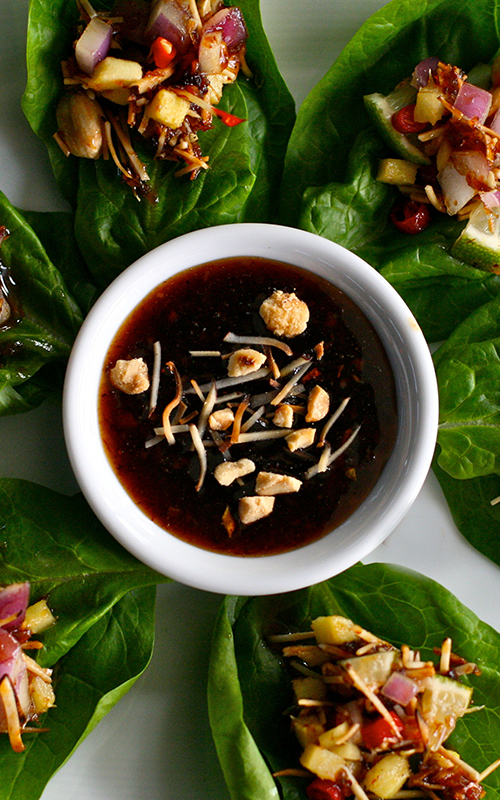
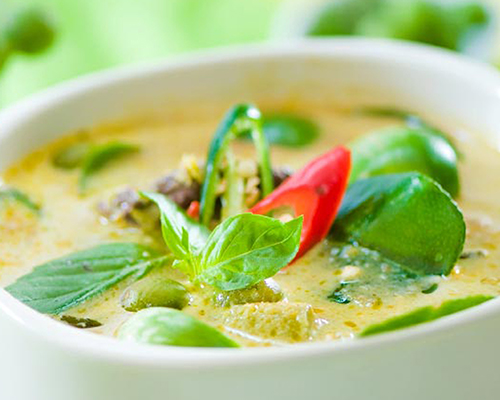
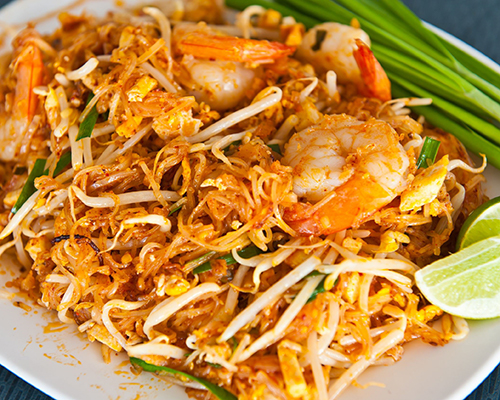
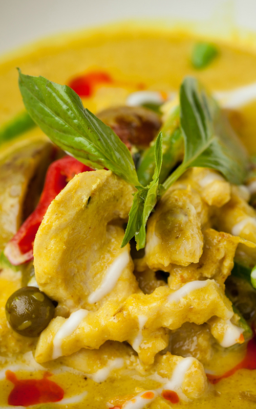

- 1. KOO RUK (9.95)
- Deep fried shrimps and squids served with sweet and sour sauce.
- 2. POR-PIER PAK (6.95)
- Deep fried vegetarian egg rolls stuffed with silver noodles, onions, carrots and taro salad.
- 3. POR-PIER MOO (7.95)
- Deep fried pork egg rolls stuffed with silver noodles, onions, carrots and taro salad.
- 4. TAO HOO TOD (6.95)
- Deep fried tofu, served with sweet and sour sauce with ground peanut on top.
- 5. SAI AOU (8.95)
- Deep fried pork sausage, served with vegetables.
- 6. GARLIC PORK SPARERIBS (8.95)
- Fried marinated pork spareribs topped with garlic.
- 7. PLA MUEK TOD (9.95)
- Deep fried calamari.
- 8. PEAK GAI TOD (7.95)
- Deep fried chicken wings.
- 9. SA TAE (8.95)
- Chicken or pork skewer marinated in herbs, spices and yellow curry powder.
- 10. FRESH ROLLS (6.95)
- Rice paper rolls stuffed with vegetables.
- 11. KAO NAM TOD (8.95)
- Fried rice ball and preserved pork, served with peanuts and vegetables.
- 12. TAMARIND SHRIMP (9.95)
- Deep fried shrimp served with tamarind sauce.
- 13. ANGEL WINGS (9.95)
- Deep fried stuffed chicken wings.
- 14. GUI CHAI (7.95)
- Crispy vegetarian chive cakes.


- 15. SOM TUM GOONG YANG (9.95)
- Shredded green papaya salad with grilled prawns.
- 16. SOM TUM THAI (8.95)
- Shredded green papaya salad with dried shrimps.
- 17. SOM TUM POO (9.95)
- Shredded green papaya salad with salted crabs.
- 18. LARB (9.95)
- Pork, chicken, or beef salad mixed with red onion, mint leaves, cilantro, and ground roasted rice.
(Five spice duck or catfish 11.95)
- 19. EGGPLANT SALAD (9.95)
- Broiled eggplant with minced shrimps and ground chicken.
- 21. YUM PLA MUK (10.95)
- Squid salad mixed with onions, chili, ginger, basil and lemon grass.
- 22. YUM WOON SEN (9.95)
- Silver noodle salad with minced pork and shrimp, black fungus, onions and chili in lime dressing.
(Vegetarian 7.95)
- 23. YUM NUER (9.95)
- Beef salad mixed with onions, chili, cucumber and tomatoes in lime dressing.
- 24. YUM RUAM MIT TALAY (11.95)
- Combination seafood salad mixed with onions in lime dressing.
- 25. NUM TOK (9.95)
- Choice of slice toasted beef or pork with mint, ground roasted rice in lime dressing.
- 26. TOM KHA (9.95)
- Hot and sour chicken soup with coconut milk.
(Vegetarian 7.95)
- 27. TOM YUM GOONG (10.95)
- Hot and sour prawns soup with tomatoes, lemon grass, and galangal.
- 28. PO TAK (13.95)
- Hot and sour combination seafood soup with tomatoes, lemon grass, and galangal.
- 29. GANG JERD WOON-SEN (8.95)
- Silver noodles with ground pork and assorted vegetables soup.
(Vegetarian 7.25)


- 30. KA MOO
- Special pork leg stew.
(Rice plate 9.95)
(A la Carte 12.95)
- 32. KAO MAN GAI (8.95)
- Steamed chicken over garlic rice.
- 33. KAO NA PED PA-LO (9.95)
- Five spiced duck over steamed rice.
- 34. KAO RAD NA GAI (9.95)
- Chicken sauteed with bamboo shoots, straw mushroom in gravy over rice.
- 35. GANG GA-REE GAI (Yellow Curry)
- Choice of chicken, beef or pork in mild yellow curry with potatoes.
(Rice plate 9.95)
(A La Carte 11.95)
- 36. GANG KHEW-WAN (Green Curry)
- Choice of chicken, beef or pork in medium green curry.
(Rice plate 9.95)
(A La Carte 11.95)
- 37. GANG PANANG
- Choice of chicken, beef or pork in medium red curry with fresh basil.
(Rice plate 9.95)
(A La Carte 11.95)
- 38. PUMPKIN CURRY (12.95)
- Choice of chicken, beef, or pork in red curry with pumpkins, bell pepper and fresh basil.
- 39. GANG DANG (Red Curry)
- Choice of chicken, beef, or pork in red curry with zucchini, eggplants, bell peppers and fresh basil.
(Rice plate 9.95)
(A La Carte 11.95)
- 40. GANG KOOR GOONG (12.95)
- Shrimp in medium red curry with pineapple, tomatoes, and basil.
- 41. CHOO CHEE PLA (14.95)
- Fried filet salmon topped with red curry and assorted vegetables.
- 42. SALMON CURRY (14.95)
- Fried filet salmon topped with green curry, zucchini, eggplants, bell peppers and fresh basil.
- 43. CAT FISH CURRY (14.95)
- Pan grilled cat fish in red curry, carrots, green beans, eggplants and bell peppers.
